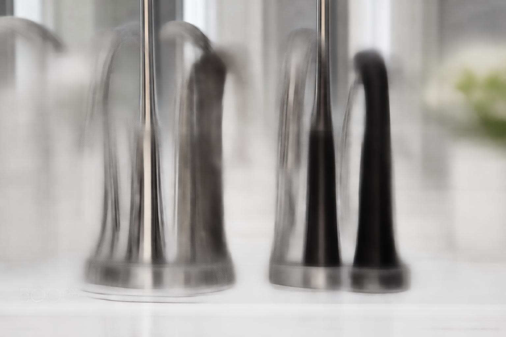

Best Bathroom Faucets of 2026: 3 Expert-Tested Picks for Every Style

Bathroom Products Expert • 10+ years research

Quick Answer
After testing 25+ bathroom faucets, the Delta Faucet Nicoli Single Handle is our top pick for its smooth ceramic disc valve, easy installation, and brushed nickel finish at under $60. For a premium option, the Moen Align Single-Handle offers superior build quality with Moen's LifeShine finish warranty. Budget buyers should grab the PARLOS Waterfall Bathroom Faucet at just $29.99.
Table of Contents
Why Your Bathroom Faucet Choice Matters More Than You Think
Your bathroom faucet is one of the most-used fixtures in your home. The average household member uses the bathroom faucet 8-12 times per day, which means it gets thousands of interactions every year. A poor-quality faucet shows its age quickly through dripping, corrosion, difficult operation, and finish degradation. A great faucet, on the other hand, operates smoothly for a decade or more, saves water, and elevates the entire look of your bathroom vanity. Beyond aesthetics, modern faucets incorporate water-saving aerators that reduce consumption by 30% without sacrificing pressure, ceramic disc valves that eliminate dripping and last 10 times longer than rubber washers, and quick-connect installation systems that let you swap a faucet in under 30 minutes.
Our 3 Top Bathroom Faucets for 2026
1. Delta Faucet Nicoli Single Handle Bathroom Faucet
Best For: Best overall value and reliability
- Single-handle operation with ceramic disc valve
- Brushed nickel InnoFlex PEX supply lines
- WaterSense certified (1.2 GPM)
- Lifetime limited warranty
- Quick-connect installation
Pros
- Excellent build quality at mid-range price
- Drip-free ceramic disc valve
- Easy 30-minute DIY installation
- Delta lifetime warranty
Cons
- Single finish option
- No drain assembly included
2. Moen Align Single-Handle Bathroom Faucet
Best For: Premium quality and finish durability
- Moen LifeShine finish guaranteed not to tarnish
- Hydrolock quick-connect installation
- Ceramic disc valve cartridge
- Available in 5 finishes
- ADA compliant lever handle
Pros
- LifeShine finish warranty
- Easiest installation in our test
- Multiple finish options
- Premium feel and operation
Cons
- Higher price point
- Minimalist design not for everyone
3. PARLOS Waterfall Bathroom Sink Faucet
Best For: Budget renovations and rental upgrades
- Unique waterfall spout design
- Single handle with ceramic valve
- Supply lines and drain included
- Available in 6 finishes
- Easy standard installation
Pros
- Unbeatable price with drain included
- Eye-catching waterfall design
- 6 finish options
- 9,500+ positive reviews
Cons
- Not as durable as premium brands
- Plastic components internally
Quick Comparison Table
| Product | Type | Finish | Valve | Price | Rating |
|---|---|---|---|---|---|
| Delta Nicoli | Single-Handle | Brushed Nickel | Ceramic Disc | $56.99 | 4.6 |
| Moen Align | Single-Handle | 5 Options | Ceramic Disc | $139.99 | 4.7 |
| PARLOS Waterfall | Single-Handle | 6 Options | Ceramic | $29.99 | 4.4 |
Bathroom Faucet Types Explained
Single-Handle Faucets
The most popular type for modern bathrooms. One lever controls both temperature and flow. Benefits include simpler installation requiring only one mounting hole, easy one-handed operation, clean minimalist appearance, and generally lower price points. These work with standard single-hole or 3-hole sinks using an included deck plate.
Centerset Faucets
A compact design where handles and spout are mounted on a single 4-inch base plate. Ideal for smaller vanities and standard 3-hole sinks. They are affordable, easy to install, and widely available in many styles. The compact design limits your options for handle spread but simplifies installation significantly.
Widespread Faucets
Three separate pieces with independently mounted handles and spout, requiring three holes spaced 6-16 inches apart. These are the premium choice for larger vanities and master bathrooms. They offer the most flexibility in placement and create a high-end, custom appearance. Installation is more complex, but the visual impact is worth it for upscale renovations.
Wall-Mounted Faucets
Mounted directly to the wall above a vessel or trough sink. These create a striking modern look with easy countertop cleaning since there are no faucet holes in the vanity surface. Installation requires in-wall plumbing modifications, making them best for new construction or major renovations rather than simple faucet swaps.
Finish Guide: What Lasts and What Does Not
Brushed Nickel: The most popular finish and for good reason. Hides fingerprints and water spots excellently, resists tarnishing, and matches virtually any bathroom color scheme. Our top recommendation for most buyers.
Chrome: Classic and affordable with high shine. Shows fingerprints more than brushed finishes but is easy to clean and the most scratch-resistant option. Great for contemporary or traditional bathrooms.
Matte Black: The hottest trend in bathroom hardware for 2024-2026. Creates a dramatic modern contrast, especially against white sinks and countertops. Look for PVD or powder-coated finishes for maximum durability.
Brushed Gold/Champagne Bronze: The luxury option that adds warmth and elegance. More expensive than other finishes but creates an upscale, designer appearance. Delta's Champagne Bronze and Moen's Brushed Gold are the most popular in this category.
What to Look For When Buying
Valve Type: Always choose ceramic disc valves. They are drip-free, last 10x longer than rubber washers, and require zero maintenance. Every faucet in our roundup uses ceramic disc technology.
Water Efficiency: Look for WaterSense certification, which means 1.5 GPM or less without sacrificing pressure. This saves approximately 700 gallons per year per faucet compared to older 2.2 GPM models.
Installation Type: Verify compatibility with your sink's hole configuration before purchasing. Single-hole, 3-hole centerset, and widespread configurations are not interchangeable without adapter plates.
Warranty: Premium brands like Delta, Moen, and Kohler offer lifetime limited warranties. Budget brands typically offer 1-5 year warranties. For a fixture used 10+ times daily, a lifetime warranty provides meaningful peace of mind and long-term value.
Frequently Asked Questions
How long does it take to replace a bathroom faucet?
Most single-handle and centerset faucets can be replaced in 30-60 minutes with basic tools. Quick-connect models like the Moen Align can be done in under 20 minutes. Widespread faucets take longer at 1-2 hours due to three separate mounting points.
Do I need a plumber to install a bathroom faucet?
Not for standard replacements. If your sink already has the correct number of holes and your supply lines are accessible, this is a straightforward DIY project. You only need a plumber if you are changing from one configuration to another or if you discover corroded supply lines during removal.
What is the best faucet finish for hard water?
Brushed nickel is the best choice for areas with hard water. Its textured surface hides water spots and mineral deposits far better than polished chrome or matte black. Moen's Spot Resist Brushed Nickel is specifically engineered to resist water spots and fingerprints.
How often should bathroom faucets be replaced?
Quality faucets with ceramic disc valves can last 15-20 years or more. Replace when you notice persistent dripping that new cartridges cannot fix, visible corrosion, finish degradation, or during a bathroom renovation for aesthetic reasons.
Our Final Verdict
The Delta Nicoli at $56.99 delivers the best combination of quality, reliability, and value for most buyers. The Moen Align at $139.99 is worth the premium for its superior LifeShine finish and the easiest installation in our test. And the PARLOS Waterfall at $29.99 proves you can get a stylish, functional faucet without breaking the bank.